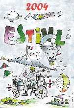
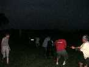
il a fallu sortir à bras ferme et les pieds dans l'eau les Pirates enlisés jusqu'aux moyeux !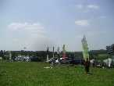
Le samedi matin, les cerfs-volistes arrivent de plus en plus nombreux et s'installent autour du champ.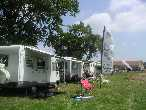
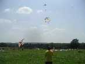
Les cerfs-volants commencent à monter, dans un ciel d'abord gris, qui s'éclaircit ensuite.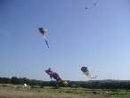
Pendant ce temps, on finit de moissonner le blé entre le terrain des CV et la piste des ULM !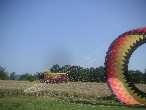
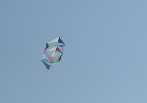
On sort des cerfs-volants originaux ; celui-ci, de forme hexagonale allongée n'est pas un rokkaku, il a 3 barres transversales et est constitué de morceaux séparés par du vide.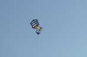
Parfois, il y a même un peu trop de cerfs-volants, et on entame une petite valse... (j'aime bien ce rokkaku, même s'il est à l'envers).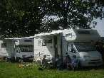
Pendant ce temps, les femmes se préparent à leurs dures tâches ménagères et gardiennent les chiens, le chat et la perruche.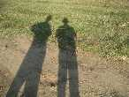
Mais l'après-midi avance, les ombres s'allongent, et il est temps de consulter la coccinelle.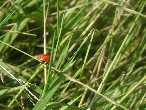
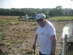
Les plus jeunes aussi.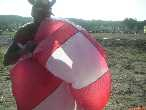
William se cache derrière son cadeau d'anniversaire : 35 balais aujourd'hui (fallait pas le dire ?), une belle Nasa offerte par la bande.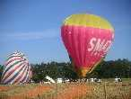
Les montgolfières sont arrivées, elles vont faire un baptême en fin d'après-midi.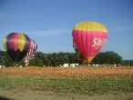
Elles profitent de ce que le vent est un peu tombé, la tâche est plus facile pour elles (et puis il fait moins chaud et y a pas mal de main d'oeuvre d'abord, pour pouvoir voler après !).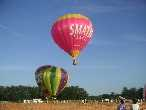
En prime, avec l'éclairage rasant, le paysage sera plus pittoresque.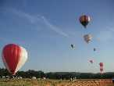
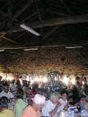
Temps d'aller dîner. La table est mise dans le corps de ferme, splendide bâtiment doté d'une impressionnante charpente.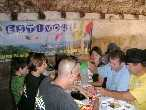
Regain : une future cervoliste, Lorane, est née, elle commence à courir les rencontres à 3 semaines ! Blandine exulte, Sylvain est ravi, Richard est heureux.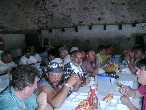
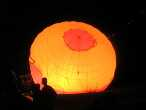
Sur le soir, vol de nuit. On s'amuse bien malgré un éclairage intimiste par projecteurs à piles. Seuls les toulousains ont monté une guirlande de lampions à bougie auto-éclairée (à droite sur la photo), portée par 3 Rollers .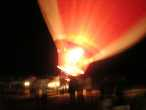
Les montgolfières vont ensuite nous offrir un petit ballet sans presque décoller mais avec des coups d'éclairage interne impressionnants par la flamme et par le bruit dans la nuit calme.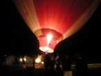
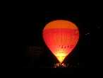
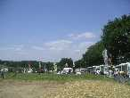
Dimanche matin, le sol est plus sec (surtout qu'on a mis de la paille de la moisson d'hier sur les parties dénudées).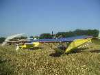
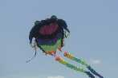
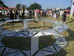
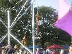
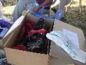
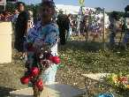
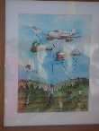
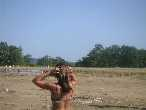
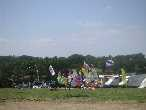
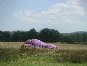
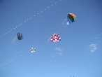
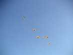
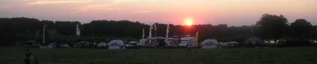